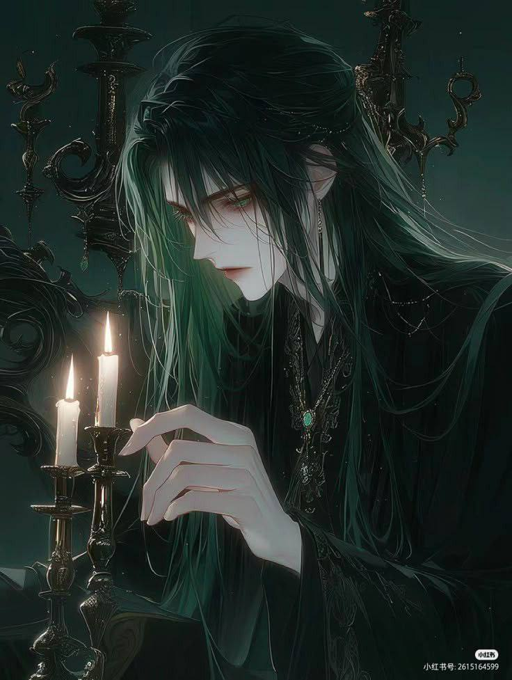

Сяо Фєй

༺࿅ིཽ༼⛩ПІБ: Сяо Фєй
༺࿅ིཽ༼⛩Вік/Дата народження: 27/ 25.04
༺࿅ིཽ༼⛩Ріст/Вага: 182 / 90
༺࿅ིཽ༼⛩Характер
Сяо живе в межах світу, але не належить йому. Він схожий на мовчазну примару серед шумного натовпу: тут, але водночас деінде. Його погляд ніби ковзає повз звичну реальність, зупиняючись на невидимому іншим горизонті. В очах — тиха глибина смарагдових мрій. Чоловік ніколи не шукає товариств. У людях ж бачить лиш нескінченну круговерть — хаотичну, нестабільну, сповнену зайвого шуму й надуманих ролей. Їхні слова часто — порожній шелест вітру, їхні вчинки — спонтанні, як раптові спалахи блискавиці. Суспільство схоже на палаюче вогнище: гаряче й живе, воно захоплює погляд, але підійшовши ризикуєш травмуватись. Він збудував навколо себе невидиму, але надійну стіну з глибокої втоми та бажання зберегти чистоту власної тиші. Сяо не має бажання шкодити іншим, так само як не прагне втручатися в їхню боротьбу з власним хаосом, адже добре розуміє: кожен сам обирає свою стежку, як би руйнівно вона не завершилася. Та попри відчуженість, у його серці живе рідкісна здатність до відданості. Якщо хтось здобуде чоловічу довіру, він отримає союзника, вірного до кінця, не через наївність, а через усвідомлений вибір.
На диво, Сяо зберіг те дитяче захоплення простими радощами життя. Він здатен зупинитися заради миті: помітити, як падає пелюстка квітки, чи відчути тепло сонячного променя на шкірі. Споглядач, що не втручається, але здатен на глибокі почуття; самітник, що знає справжню ціну близькості.
༺࿅ིཽ༼⛩Біографія
Відрізнятися від інших — один із найважчих тягарів, особливо якщо твоє дитинство минає в забутому богами селищі Сумраку. Змалку Сяо довелося пізнати жорстокість однолітків: знущання, насмішки, мовчазна ворожість, що спотворювала кожен його день. Батьки намагалися захистити своєю любов’ю та теплом, але у світі, де слабкість карається байдужістю або агресією, цього було замало. Почуття Сяо повільно згасали, він замкнувся у собі, уникав навіть найдорожчих людей. Часто зникав проти ночі, блукаючи лісами, де й зустрів дивного юнака. Та певне, не дивнішого за нього самого... Боязкий, дещо сором'язливий Сяо спочатку не наважувався до нього підходити, лише споглядав здалеку. Та хлопець не міг вічно вдавати, ніби не помічає.
На самотній галявині, поблизу старого цвинтаря, вони проводили час разом: збирали трави, вивчали їхні властивості, творили настої та відвари. Сяо, який так довго був змушений приховувати свої почуття, дарував другу всю щирість і вірність, яку накопичив у своєму серці. Здавалося той був не проти.
Час минав, Сяо дорослішав. Але селище дедалі більше обтяжувало: людська ворожість, порожні маски, щоденна фальш — усе це викликало внутрішню відразу. Хлопець став все частіше повертатися до тієї самої галявини... З спогадами про втраченого друга, долю якого більше не відав. Проти ночі він прийняв важке, але таке необхідне рішення: покинути рідних, селище та все що нагадувало йому б про дитинство й відправитись шукати власного щастя.
༺࿅ིཽ༼⛩Магічні здібності:
«Зміїний цілитель» - так хлопця прозвала купка людей. Тіло Сяо має незвичну реакцю на більшість лікарняних рослин й отрут. Декілька разів, в дитинстві, споживання батьківських зіль ледь не призвело до його смерті, тож він чітко запам'ятав: ліки - це отрута. Тіло ніколи не прийме їх так, як мало б, лише відторгатиме як щось чуже й смертельне. А ось, що дійсно мало б бути вбивчим - отрута, яка загоює його рани, покращує здоров'я краще за більшість людських настоянок. За кілька років спільних експериментів з батьками, Сяо навчився не лише розуміти власні сили, а й мати змогу використовувати їх в лікувальній справі.
Його магічний хист з давніх давен вважається радше прокляттям, ніж даром. Така собі малоймовірна легенда, що інколи народжується в світі.
1. Прошепочи ім'я моє...
Душі поєднанні, зміїна мітка - їх символ. Вони розділяють один фізичний стан на двох та дають спільну обіцянку: захищати, попри загрози, від нині й до смерті. Так, Сяо стає чиїмось особистим лікарем, інший ж його захисником й вічним пацієнтом. Це клятва про вічну вірність, що каратиметься смертю.
Завдяки подібному зв'язку, тіло поєднаного набуває тої ж специфіки, що й Сяо: ліки стають отрутою, а отрута - ліками. Проте через це цілитель може набагато ефективніше лікувати іншого власника мітки, й не вимушений користуватись навичкою «другого життя», що значно економить власні сили. А от звернення до інших цілителів може закінчитись смертельним вироком для того, хто вирішив зрадити обіцянку Сяо.
На даний момент він може поєднатись лише з однією душею. Інші можливості попросту не дослідженні.
2. Друге життя
Сяо виліковує поранення різної глибини та важкості, хвороби й певні каліцтва, але для цього необхідне дотримання умов. По-перше — пацієнт має бути отруєним, і чим сильніше діє отрута, тим краще. Вона виступає таким собі каталізатором, що розкриває приховані шляхи для магічної енергії. По-друге, аби скористатись магічними силами, ціль лікування має бути майже мертвою. Чим ближче людина до межі життя й смерті, тим сильніше Сяо здатен втрутитись у хід її долі. Проте, при можливості він намагається уникати подібної навички, використовуючи натомість звичні ліки.
3. Протиріччя
Сяо здатен наділити свої зілля й медичні препарати тим самим парадоксальним ефектом: отрута стає ліками, а ліки — отрутою. Його кров містить у собі сліди магії, що поєднується з властивостями рослин і мінералів, створюючи ефекти, недоступні для звичайних знахарів. Використовуються вони так само як й звичайні засоби. Щось натирається, щось випивається.
༺࿅ིཽ༼⛩Наслідки знищення артефакту: -//-
༺࿅ིཽ༼⛩Розвиток персонажа: Чи може той, хто відгородився стіною тиші, віднайти місце, де бути собою — не втеча, а повернення?
༺࿅ིཽ༼⛩Божество покровитель: Леста.
༺࿅ིཽ༼⛩Сім'я
Мати й батько уродженці Еліссії, що вимушено переїхали до селища у Сумраку. Батько здебільшого науковець, що вивчає взаємодію цілющих засобів, їхній вплив на організм, нові можливості поєднання непоєднуваного. Мати ж цілителька. Нині й надалі проживають у селищі, проводячи власні експерименти.
༺࿅ིཽ༼⛩Додатково
Рекомендую до прослуховування «Sailor song» by Gigi Perez.
༺࿅ིཽ༼⛩Зовнішність: